1. Un mapa de preguntas
El propósito es aprender a leer un conjunto de fuerzas. Los indicadores no ofrecen una explicación completa de cada vela: añaden contexto procedente del mercado de opciones. Para evitar una pantalla llena de colores sin significado, conviene empezar por la pregunta y después elegir la herramienta.
| Pregunta | Herramienta | Tipo de información |
|---|---|---|
| ¿Qué distancia de movimiento está valorada? | Expected Move | Estimación hasta un vencimiento. |
| ¿Cuánta exposición cambió y en qué grupos? | Flow | Actividad agregada. |
| ¿Hacia dónde cambió la exposición neta? | Flow Delta | Dirección del reposicionamiento. |
| ¿Dónde se concentran cambios destacados? | Big Trades | Grupo, strike y momento. |
| ¿Cómo está distribuido el libro por strike? | Strike Profile | Instantánea de posiciones o sensibilidades. |
| ¿Cómo evolucionaron esos strikes? | Strike Heatmap | Historia temporal por strike. |
| ¿Qué respuesta se estima en cada precio? | Surface Profile | Corte del libro completo. |
| ¿La cobertura puede amortiguar o amplificar? | GEX Heatmap | Superficie de Gamma. |
| ¿Qué ajuste puede producir el paso del tiempo? | Charm Heatmap | Superficie de Charm. |
| ¿Cómo se resume el contexto? | Market State | Síntesis de varias lecturas. |
Primero bases y unidades; después flujo y perfiles; por último superficies y síntesis. Las ocho piezas de vídeo abarcan diez indicadores porque algunos tutoriales presentan dos herramientas juntas.
Este manual complementa la Lección 1 de Ilias, la Lección 2 y el curso escrito de ATAS. Su clasificación «Referencia» conserva la diferencia entre comprender un mecanismo y disponer de una regla de trading probada.
2. Las bases: posiciones, Delta y cobertura
Una call da al comprador un derecho de compra; una put, un derecho de venta. El strike es el precio de ejercicio y el vencimiento limita la vida del contrato. En SPX la liquidación es monetaria: estos derechos no implican recibir físicamente una cesta de acciones. 0DTE identifica opciones que vencen en esa misma jornada.
Delta expresa cuánto cambia aproximadamente el valor de una opción ante un pequeño cambio del subyacente. El riesgo del libro depende también de cuántas opciones se mantienen y de si la posición es compradora o vendedora. Por eso una call y una put, sin conocer el lado de la posición, no permiten deducir qué cobertura necesita su tenedor.
La lógica de neutralizar Delta
Un creador de mercado, market maker o MM, puede compensar el riesgo direccional de su cartera mediante una posición opuesta en el subyacente o instrumentos relacionados. La cobertura cambia cuando cambia Delta; no requiere que el MM haya adoptado una opinión sobre la próxima dirección del mercado.
Si una cartera presenta −80 ES equivalentes de Delta, una cobertura idealizada de +80 ES neutraliza ese riesgo. Si la cartera pasa a −110, el ajuste sería comprar otros 30 ES equivalentes. Esto ilustra el signo del ajuste; no documenta órdenes reales ni obliga a cubrir inmediatamente con futuros ES.
Esquema didáctico propio, sin datos de mercado.
Con Gamma neta positiva del MM, una cobertura Delta neutral tiende a vender cuando sube el precio y a comprar cuando baja: puede amortiguar el movimiento. Con Gamma neta negativa, tiende a comprar subidas y vender caídas: puede amplificarlo. El efecto depende del tamaño y de otras fuerzas concurrentes; Gamma negativa no significa por sí sola caída.
Charm no es Theta: Charm describe un cambio de Delta por tiempo; Theta, un cambio del valor de la opción por tiempo. Vanna no es Vega: Vanna relaciona Delta e IV; Vega relaciona valor e IV. Las convenciones de tiempo y unidades pueden cambiar el signo presentado; debe leerse la consecuencia de cobertura indicada en la tarjeta.
Desarrollo didáctico de los conceptos de las lecciones 1–3 y 11 del curso archivado y de los dos seminarios. No reconstruye la narración de los tutoriales cortos.
3. Qué datos estamos mirando
ATAS describe Options X-Ray como analítica de OptionsDepth basada en datos de opciones SPX de Cboe, actualizada por minuto y representada en gráficos ES, MES, SPY o US 500. Requiere acceso al paquete correspondiente. Se debe distinguir esta familia de Options Chain, que utiliza otro origen de datos y ofrece herramientas con nombres parecidos. Referencia oficial de alcance.
Un dato calculado de posicionamiento contiene más contexto que el interés abierto aislado: el open interest cuenta contratos abiertos, pero no determina por sí solo el signo del inventario de MM, sus sensibilidades ni las operaciones futuras de cobertura. Tampoco deben aceptarse como exactitud auditada las afirmaciones comerciales de «libro completo» de la fuente.
| Magnitud | Lectura correcta | Confusión que hay que evitar |
|---|---|---|
| Exposición Delta / flujo | Riesgo direccional en equivalentes ES. | Número de opciones o futuros realmente ejecutados. |
| Respuesta Gamma | ES equivalentes por punto de movimiento, o respuesta integrada si el modo lo indica. | ES totales sin declarar la distancia. |
| Charm / Vanna | Sensibilidad o respuesta estimada, según el campo y su horizonte. | Comparar unidades distintas porque ambas barras tienen igual longitud. |
| Gráfico histórico | Representación del dato disponible para ese momento según el proveedor. | Prueba de que una operación se habría ejecutado con ese dato. |
Observado: algo ya sucedido, como la trayectoria del precio. Derivado: cálculo a partir de posiciones. Condicional: proyección que depende de supuestos. «Observado» en una etiqueta del proveedor no certifica quién ejecutó cada futuro.
Las capturas muestran ESZ6, M5 y la cabecera Continuous(ES); aparecen fechas del gráfico de septiembre de 2026. La zona horaria y la versión exacta de ATAS no están acreditadas. Los strikes SPX deben trasladarse a la escala del gráfico mediante la base: SPX 6000 no equivale automáticamente a ES 6000. Comprobar el estado de calibración antes de interpretar la ubicación de una zona.
La actualización por minuto omite parte de la actividad que se abre y cierra entre observaciones. El reposicionamiento visible es una medida de actividad detectable, no toda la cinta de opciones. Un dato de opciones tampoco identifica una intención: protección de cartera y apuesta direccional pueden producir cambios similares.
4. Expected Move · movimiento esperado
Qué muestra el proveedor: un corredor estimado desde opciones hasta el vencimiento elegido, recalculado por minuto y trasladado al instrumento compatible. No predice dirección ni convierte un toque de banda en sobrecompra o sobreventa. Ficha oficial.
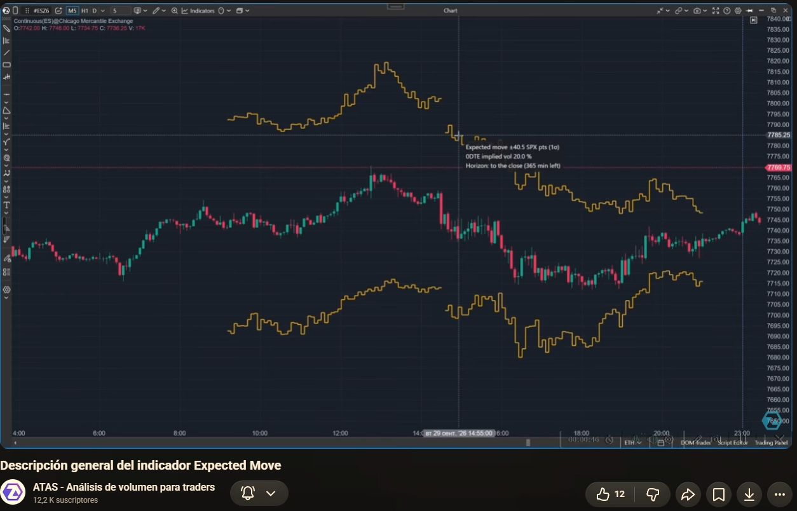
Lectura guiada
- Identificar serie y horizonte. El movimiento hasta cierre y el de media hora responden a preguntas distintas.
- Leer valor, unidad y ancla. Las dos bandas no son necesariamente niveles permanentes.
- Comparar la distancia pendiente del precio con la anchura disponible.
- Observar si la banda cambió entre dos momentos: ¿cambió la expectativa o solo se movió el precio?
Una referencia fijada en 6000 y un movimiento ±30 delimitan 5970–6030 en la misma escala. Un objetivo en 6045 queda 15 puntos más allá de la banda superior. Eso exige más recorrido del contemplado por ese corredor; no demuestra que sea imposible ni asigna una probabilidad a la operación.
Qué invalida una comparación
Cambiar el vencimiento, el horizonte o la base entre las dos lecturas. Una banda recalculada después del movimiento no sirve para afirmar que se conocía antes. «1 sigma» tampoco significa una probabilidad garantizada de permanecer dentro del corredor durante toda la sesión: una distribución terminal y una trayectoria intradía son preguntas diferentes.
Ejercicio: el precio toca la banda superior. ¿Qué sabemos?
Que ha alcanzado una referencia de distancia estimada para ese momento y horizonte. Falta observar la reacción, la actualización del corredor y las demás fuerzas. El toque no acredita un giro.
5. Flow y Flow Delta · cantidad y dirección
Flow resume exposición reposicionada por barra y grupo; Flow Delta representa el cambio neto de los grupos seleccionados, por barra o acumulado. Las unidades son equivalentes ES. Flow incluye por defecto las cuatro cohortes de clientes; Flow Delta combina inicialmente Retail y Pros. Si se comparan, hay que igualar grupos, vencimientos y Flow basis. Los MM son la contraparte agregada y su inclusión puede duplicar actividad o cancelar el neto. Flow · Flow Delta.
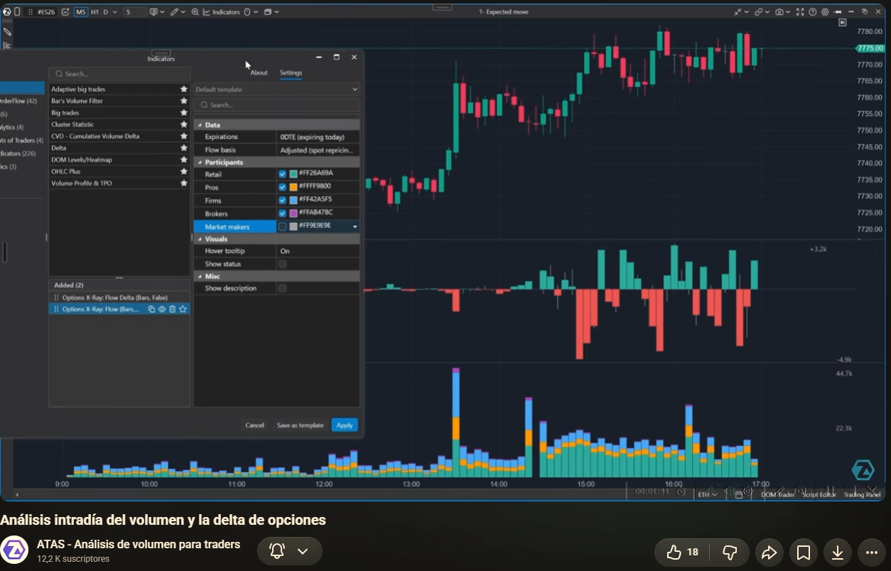
Net y repositioned: dos preguntas
Net es el saldo con signo; repositioned, la actividad detectable en ambos sentidos. Para la misma agregación, repositioned debe ser al menos el valor absoluto de net. La diferencia permite distinguir un traslado relativamente unilateral de mucho intercambio con poco saldo final.
Una secuencia de cambios +60, −40 y +10 ES equivalentes produce net = +30 y repositioned = 110. Hubo bastante actividad, pero solo quedó un saldo positivo de 30. No sería correcto describirla como «compraron 110 futuros».
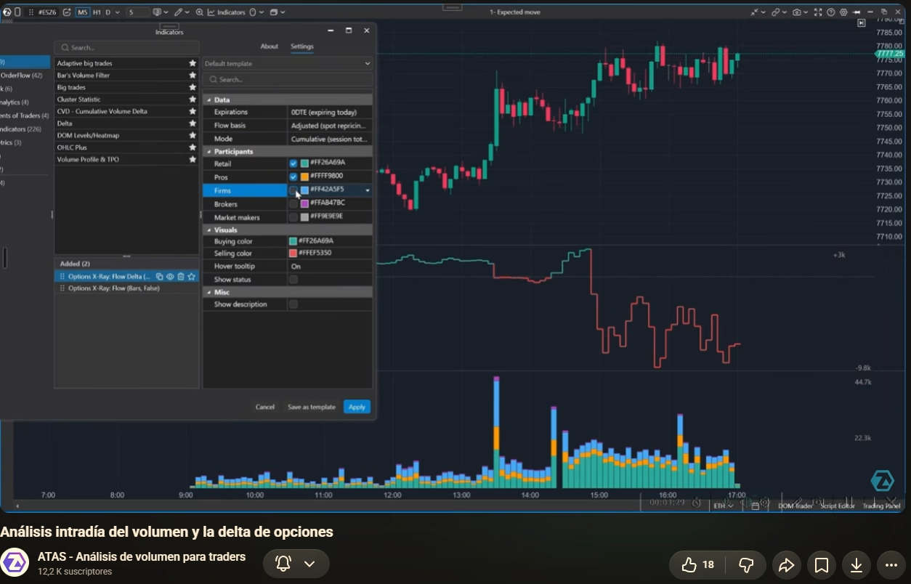
En acumulado, importa tanto el nivel como la pendiente. Un acumulado todavía positivo puede empezar a bajar: las últimas barras reducen una exposición positiva anterior. La suma depende de dónde comienza la sesión; no debe compararse con otra cuyo inicio sea distinto.
Errores frecuentes
Confundir Flow Delta con el delta de compras agresivas y ventas agresivas del futuro; inferir dirección por el color de una cohorte en Flow; comparar grupos diferentes; atribuir intenciones individuales a una categoría. La divergencia entre flujo y precio plantea una pregunta de contexto, no demuestra reversión.
Ejercicio: el acumulado sigue en +200, pero pasa de +280 a +200. ¿Cuál es el cambio?
−80 ES equivalentes en el tramo. El nivel sigue siendo positivo respecto al comienzo, pero el cambio reciente es negativo.
6. Big Trades · cambios destacados por strike
Según ATAS: cada burbuja representa un cambio destacado de un grupo, en un strike y una barra. Tamaño = exposición reposicionada; color = grupo; relleno = resultado neto añadido o reducido. El filtro selecciona los cambios mayores —por defecto, el 2 % superior de la sesión— y los valores son equivalentes ES, no contratos de opciones. Ficha oficial.
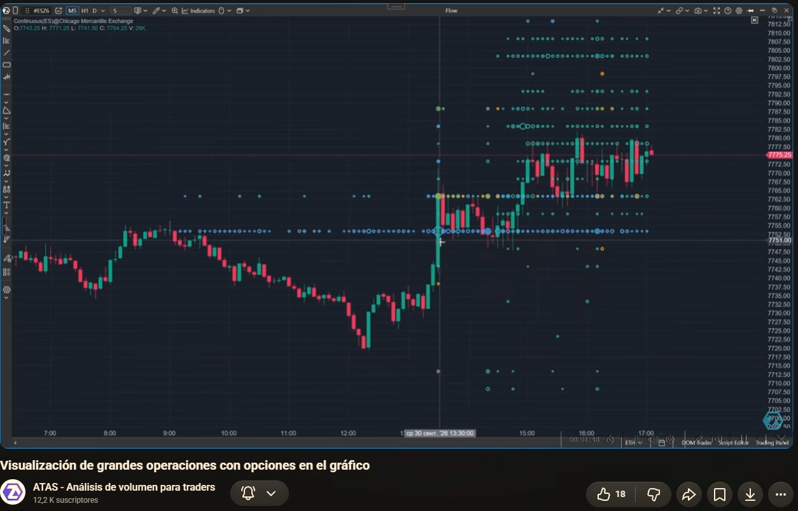
Lectura en cuatro pasos
- Identificar grupo y strike en la tarjeta, sin asumir que el color indica compra o venta.
- Separar cantidad reposicionada de saldo final. Una burbuja grande puede terminar con un saldo pequeño.
- Comprobar filtro y vencimientos. La ausencia de burbujas no equivale a ausencia de actividad.
- Volver al precio: ¿continuó, se frenó o no respondió de forma distinguible?
Dos burbujas grandes a ambos lados del precio pueden formar parte de una estructura de opciones. Sin conocer las patas, el conjunto de la cartera y su motivo, no se puede convertir cada burbuja en una apuesta independiente.
No confundir con Adaptive Big Trades: aquel estudia operaciones del mercado del gráfico; Options X-Ray Big Trades utiliza cambios de exposición de opciones SPX. Un nombre parecido no hace equivalentes sus filtros ni sus unidades.
Ejercicio: no aparecen burbujas durante diez minutos. ¿Es correcto decir que nadie negoció opciones?
No. Puede haber actividad inferior al filtro o cambios no detectados entre observaciones. Comprobar estado de datos, selección de participantes, vencimientos y umbral.
7. Strike Profile · la instantánea por precio de ejercicio
Según el proveedor: el perfil organiza posiciones o exposiciones por strike, con selección de vencimientos, participantes o griegos y varios estilos. Permite consultar la última barra, seguir el cursor o fijar una barra con Ctrl+clic. No es un perfil de interés abierto. Ficha oficial.
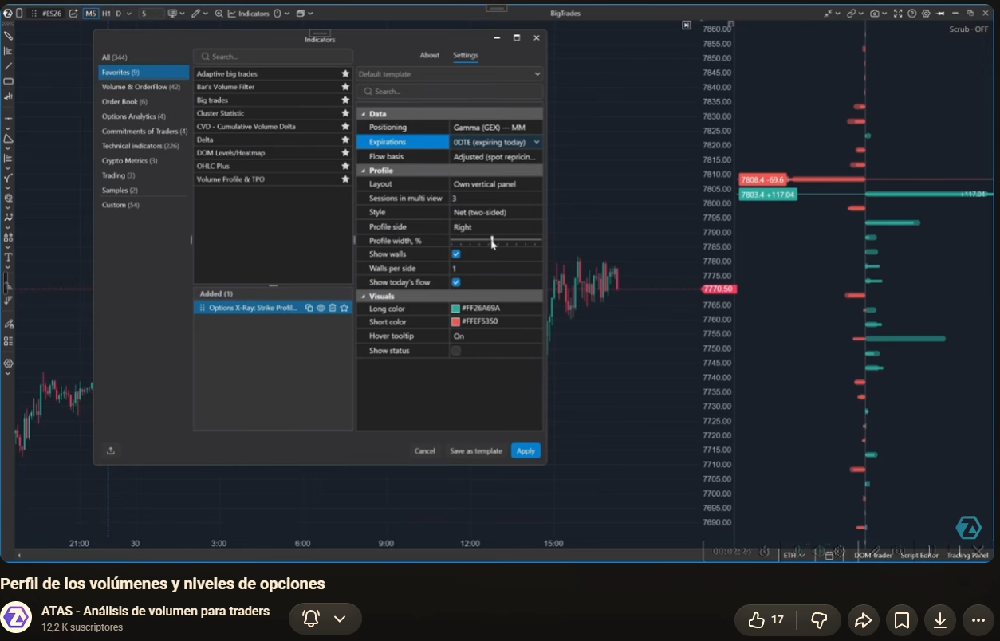
La primera frase de una lectura debe incluir qué magnitud, de quién, qué vencimiento y qué minuto. «Hay una barra grande arriba» carece de información suficiente. Si el modo es Gamma de MM, la barra representa sensibilidad, no una orden pendiente de vender a ese precio.
Una zona destacada no es una pared física
El proveedor denomina walls a concentraciones relevantes. Su lectura depende del signo y del modo; no toda concentración es soporte. La exposición puede cambiar antes de que el precio llegue, y una presión ajena a opciones puede superar su efecto. La invalidación documental de una lectura aparece cuando cambia el libro, vence la serie, se cambia de modo o falla la calibración.
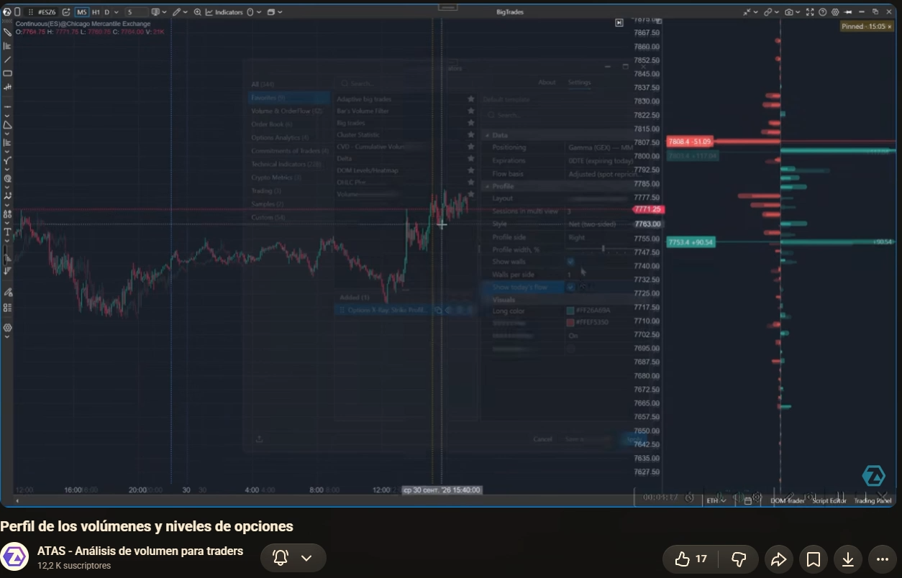
Guardar una captura antes del movimiento con minuto y ajustes. Después comparar otra del mismo modo. Registrar desaparición, desplazamiento o cambio de signo. Este procedimiento sirve para evaluar una hipótesis; no reconstruye por sí solo una decisión que se hubiera tomado en directo.
Ejercicio: Gamma 0DTE y Delta semanal muestran niveles diferentes. ¿Hay una contradicción?
No necesariamente. Se han cambiado la magnitud y el universo de opciones. Para buscar una contradicción hay que mantener ambos constantes, además del momento y la base.
8. Strike Heatmap · la historia de los strikes
Según ATAS: representa la exposición seleccionada en pistas por strike a lo largo de la sesión. El brillo expresa su magnitud y el color su signo; el significado concreto cambia con el modo. Puede mostrar sensibilidades de MM o posiciones de grupos, con selección de vencimientos. Ficha oficial.
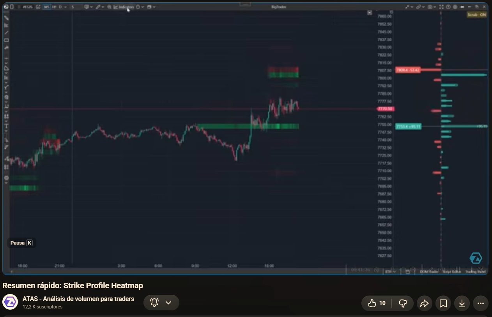
Qué aporta frente al perfil
El perfil responde «cómo está ahora»; el mapa temporal ayuda a preguntar «cuándo apareció». Para estudiar una reacción, interesa saber si la concentración ya existía antes de la llegada del precio, si creció después o si se debilitó durante el acercamiento.
Una zona brillante a las 14:00 no explica automáticamente un giro de las 10:00. Si la pista empieza al mediodía, usarla para justificar el giro anterior introduce información futura.
Comprobar modo, leyenda y vencimientos antes de comparar colores. Una pista brillante en Gamma negativa puede representar amplificación; una pista brillante en posición de clientes responde a otra pregunta. Tampoco el brillo es una escala fija de fuerza comparable entre pantallas con ajustes distintos.
Ejercicio: la zona existía antes del giro y el precio reaccionó. ¿Queda validada como regla?
Queda documentada una coincidencia temporal compatible con la hipótesis. Hacen falta más casos, también fallos, reglas definidas de antemano y control de otros factores para evaluar su utilidad.
9. Surface Profile · fuerzas a cada nivel de precio
Documentación del proveedor: presenta un corte temporal de la superficie del libro completo, sin selección de vencimientos. Ofrece Gamma, Vanna, Charm y respuesta Gamma a un desplazamiento. El modo puntual de Gamma se expresa por punto; la respuesta integra un recorrido elegido. Puede fijarse a una barra o explorar una proyección. Ficha oficial.
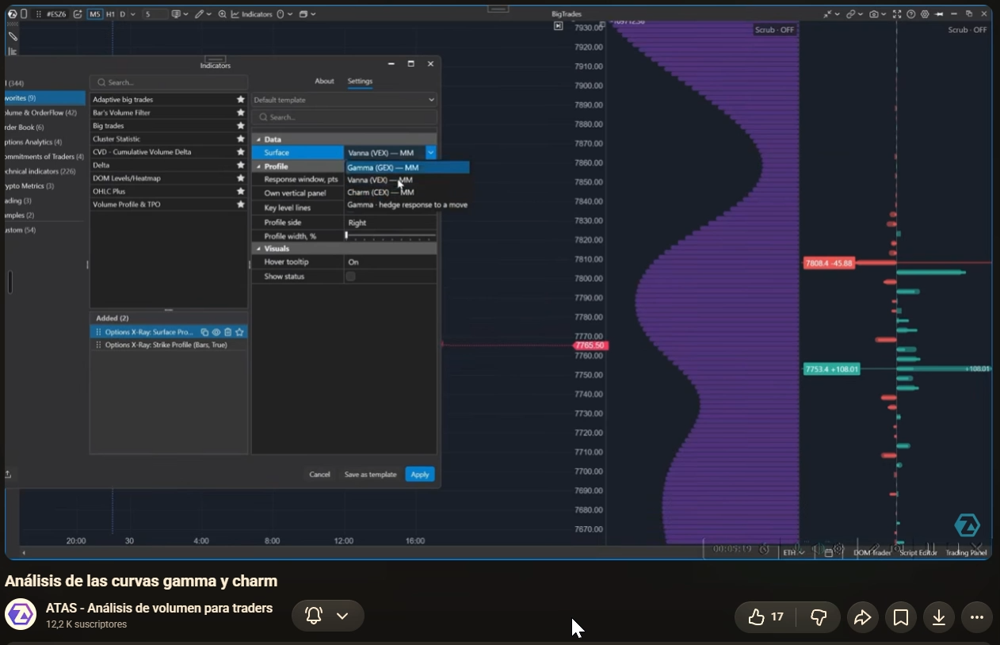
Strike y precio hipotético no son lo mismo
Strike Profile distribuye el libro por contratos con determinados precios de ejercicio. Surface Profile pregunta qué respuesta tendría todo el libro si el subyacente estuviera en cada precio. El pico de uno no tiene por qué coincidir con el del otro; describen dimensiones diferentes.
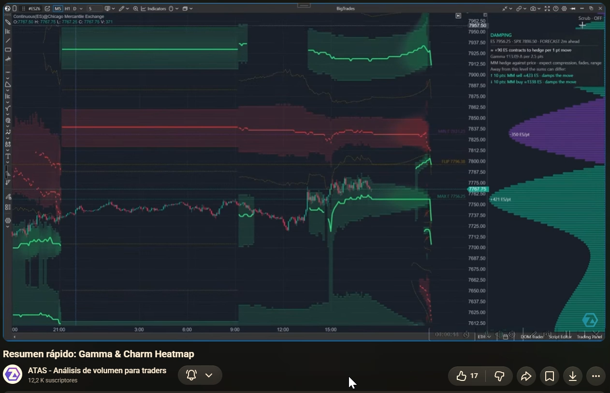
Si la respuesta puntual fuera estable en 20 ES equivalentes por punto a lo largo de 5 puntos, el ajuste integrado tendría una magnitud aproximada de 100 ES equivalentes. Si la fuerza cambia por el camino, multiplicar el pico por cinco sobreestima o subestima la respuesta.
En Vanna hay que declarar el cambio de IV, su unidad y el signo del libro. En Charm, el horizonte temporal. No multiplicar una cifra de Charm por una distancia de precio ni interpretar Vanna como una predicción de que la IV vaya a subir.
Ejercicio: la fuerza puntual es grande, pero la respuesta integrada es modesta. ¿Puede ocurrir?
Sí. Un pico estrecho puede estar rodeado por niveles débiles o de signo opuesto. La respuesta depende de todo el recorrido.
10. GEX Heatmap · el entorno de cobertura Gamma
Según ATAS: la superficie combina precio y tiempo para estimar dónde la cobertura de MM amortiguaría o amplificaría movimientos. Incluye referencias de zonas y frontera de régimen. La proyección procede del libro reciente y no equivale a un resultado observado. Ficha oficial.
En el modelo Delta neutral, cobertura contra el movimiento: vender subidas y comprar caídas. Puede favorecer freno o rotación si su tamaño es relevante.
Cobertura en el sentido del movimiento: comprar subidas y vender caídas. Describe sensibilidad a desplazamientos en ambas direcciones.
Cómo leer una superficie
- Elegir una coordenada precio–tiempo y abrir su tarjeta.
- Confirmar régimen y unidad; no interpretar solo el color.
- Medir la distancia a una zona relevante y a la frontera de régimen.
- Separar historia de proyección; anotar el minuto del libro que la sostiene.
- Contrastar el movimiento real: ¿la respuesta del precio concuerda con el contexto?
La figura 9 muestra Gamma y su respuesta de cobertura. Las figuras 10 y 11 muestran tarjetas de Charm: sus cifras y colores no se trasladan a GEX. El título conjunto no basta para identificar la superficie seleccionada.
Una frontera de Gamma no es una entrada ni un stop definidos. Cruzarla puede cambiar el contexto estimado; no obliga al precio a continuar ni establece qué fuerza inició el movimiento. Noticias, cambios de libro y flujos de otros participantes pueden dominar.
Ejercicio: el régimen es amplificador y el precio está quieto. ¿Es incoherente?
No. El régimen describe una posible respuesta ante movimiento, no genera necesariamente un impulso inicial. Puede haber sensibilidad sin desplazamiento efectivo.
11. Charm Heatmap · qué puede cambiar por tiempo
Según el proveedor: estima ajustes de cobertura al pasar el tiempo para distintas coordenadas de precio y minuto. En su paleta descrita, verde indica compras estimadas y rojo ventas estimadas. La magnitud puede aumentar cerca del vencimiento, pero depende del libro. No confirma ejecuciones reales. Ficha oficial.
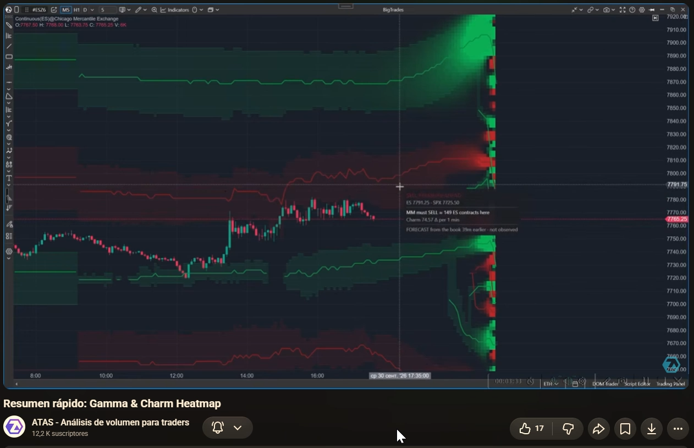
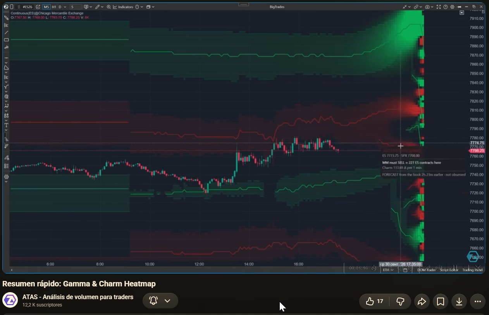
El tiempo pasa en todos los escenarios, pero el precio y la IV también pueden cambiar, y los participantes pueden renovar posiciones. Por eso «si el libro y la IV se mantienen» es parte de la explicación, no una letra pequeña que pueda eliminarse.
Una previsión de ventas por tiempo a un precio fijo puede perder relevancia si el mercado se desplaza a otra zona de la superficie. Registrar solo «Charm vendedor» omite la condición principal de la lectura.
Una cifra no siempre es una tasa
Comprobar si la tarjeta presenta sensibilidad por minuto o flujo acumulado para un horizonte. El valor bruto del griego y la traducción a contratos son campos distintos. No extender una tasa local constante hasta cierre cuando el propio modelo cambia con precio y tiempo.
Ejercicio: el mapa proyecta ventas y después el precio sube. ¿Qué se puede concluir?
Que el movimiento observado no siguió esa lectura aislada. Para evaluar el caso, conservar la proyección inicial, sus supuestos y los cambios de libro; comprobar además las otras fuerzas. No atribuir automáticamente el resultado a un error del operador.
12. Market State · resumir sin perder las condiciones
Documentación oficial: el panel combina BACKDROP, IMPULSE, DECAY y ROOM, con una lectura PRICE y cintas históricas GAMMA/FLOW. Las etiquetas OBSERVED, DERIVED y CONDITIONAL distinguen naturaleza del dato. Un campo no disponible indica N/A y su motivo. Ficha oficial.
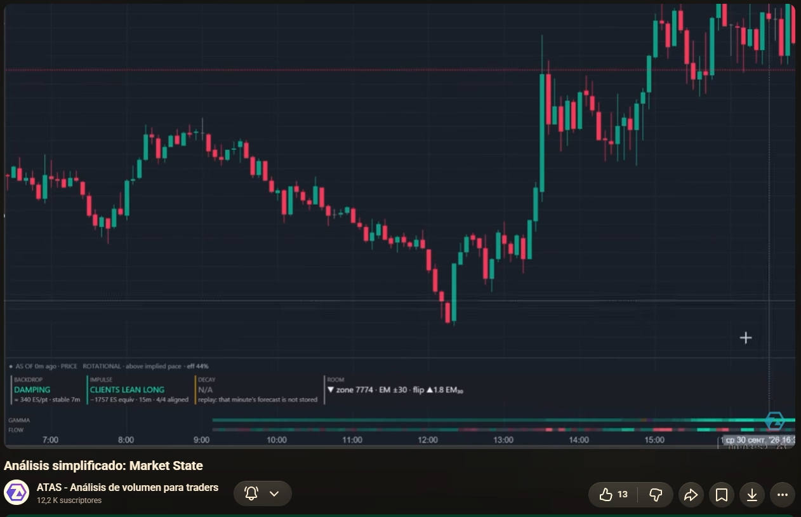
| Campo | Pregunta de estudio | Qué debemos contrastar |
|---|---|---|
| BACKDROP | ¿Qué respuesta de cobertura se estima alrededor del precio? | Amortiguación, amplificación o mezcla; tamaño y asimetría. |
| IMPULSE | ¿Hacia dónde se ha desplazado el riesgo de clientes? | Horizonte y grupos; no igualarlo sin más a un Flow Delta 0DTE. |
| DECAY | ¿Qué presión por tiempo se proyecta? | Supuestos, caminos de precio y disponibilidad. |
| ROOM | ¿Qué distancia queda hasta referencias del mapa? | Zona frente a línea, horizonte y unidad de distancia. |
| PRICE | ¿Cómo se mueve el precio de hecho? | Concordancia o discrepancia con la lectura de opciones. |
«Damping + clientes inclinados al alza + precio rotacional» reúne fuerzas y comportamiento diferentes. La lectura compatible sería presión alcista reciente dentro de un entorno que puede amortiguar. No permite rellenar DECAY con «neutral»: no disponible no significa efecto cero.
El panel evita tener que memorizar muchas cifras, pero no debe convertirse en una votación por colores. Si sus campos discrepan, volver a las tarjetas y a los módulos detallados. Una etiqueta sintética oculta parte de la distribución que generó el cálculo.
Ejercicio: tres campos parecen alcistas y uno es N/A. ¿Hay una señal por mayoría?
No. Los campos no son votos equivalentes y N/A no aporta dirección. Primero identificar qué mide cada uno y cuáles son sus condiciones.
13. Montaje de estudio y resolución de problemas
Esta secuencia describe la documentación consultada el 10/10/2026 y los ajustes visibles; no acredita la versión instalada ni prueba el funcionamiento de tu cuenta. No modifica plataforma, conexiones ni órdenes.
- Identificar el entorno: versión de ATAS, instrumento y contrato, horario del gráfico y acceso a Options X-Ray. Cargar suficiente historia y comprobar frescura/calibración.
- Abrir un gráfico compatible: ES, MES, SPY o US 500, según el proveedor. M5 reproduce la temporalidad visible, sin convertirla en la mejor temporalidad para operar.
- Añadir las herramientas: Indicators → buscar «Options X-Ray» o categoría Options Analytics → seleccionar indicador → Add to chart. Confirmar sus nombres, no solo «Options».
- Primer espacio: Expected Move y Flow/Flow Delta. Igualar vencimientos, base y cohortes al comparar. Activar tarjetas y estado durante el estudio.
- Segundo espacio: Big Trades, Strike Profile y Strike Heatmap. Anotar filtro, exposición y serie. Preferir un panel separado si los perfiles ocultan velas.
- Tercer espacio: GEX/Charm Heatmap y Surface Profile. Añadir uno cada vez para aprender la leyenda. Marcar el límite entre dato histórico y proyección.
- Por último: Market State como resumen, contrastándolo con los paneles ya comprendidos. Guardar una plantilla de estudio, si se decide hacerlo, con los parámetros documentados.
La separación en tres espacios es una propuesta editorial propia para reducir confusiones. No es una plantilla prescrita por el instructor ni una combinación validada con ICT.
| Síntoma | Comprobación útil |
|---|---|
| Indicador ausente | Paquete habilitado y versión que lo ofrece; consultar soporte antes de asumir fallo de datos. |
| Panel vacío | Instrumento admitido, grupos y serie seleccionados, estado del feed y sesión consultada. |
| Niveles aparentemente desplazados | Calibración de base y días cargados. No moverlos manualmente para forzar coincidencias. |
| Perfiles cambian al mover el cursor | Modo de exploración temporal activo; fijar una barra para mantener la referencia. |
| Flow y Flow Delta no encajan | Mismos grupos, vencimientos, base, modo e inicio de sesión. |
| DECAY histórico muestra N/A | Leer motivo. No inventar la previsión no almacenada. |
| Queremos usar niveles en NQ o FDAX | El dato SPX puede estudiarse como contexto externo, pero sus niveles no son niveles de esos instrumentos. |
Procedimiento común descrito en las fichas oficiales de Flow, Flow Delta y Strike Profile. La interfaz concreta debe confirmarse en una versión identificada.
14. Lectura conjunta: un taller de observación
La siguiente secuencia es un marco propio de estudio. Organiza preguntas; no prescribe entradas, stops ni objetivos. Si se incorpora después a una estrategia, deberá conservarse como hipótesis «En prueba» hasta evaluar reglas y resultados.
Escenario ficticio antes de conocer el resultado
A las 14:00 guardamos estos datos inventados: corredor con 25 puntos pendientes hasta su extremo superior; Gamma de MM positiva cerca de una zona situada 12 puntos arriba; Flow muestra mucha actividad y saldo pequeño; el precio sube lentamente. La hipótesis sería que la zona puede frenar el ascenso si el libro se mantiene. También son posibles una ruptura por nueva presión o una desaparición de la concentración.
Antes del desenlace se registra: minuto de datos, instrumento, base, vencimientos, grupos, exposición, modo, distancia y captura. Después se describe qué cambió y qué hizo el precio. No se redefine retrospectivamente la zona para que coincida con el máximo final.
Taller A: el precio atraviesa la zona. ¿Qué revisar primero?
Si la concentración seguía presente al llegar; si cambió de signo o vencimiento; si apareció nuevo flujo y qué hizo el precio. Si no cambió nada medible, registrar el fallo de la hipótesis. No renombrar una zona amortiguadora como «aceleradora» solo porque fue atravesada.
Taller B: el precio gira antes de llegar. ¿Se atribuye a la zona?
No de forma automática. Registrar distancia del giro, fuerza estimada allí, cambios concurrentes y explicaciones alternativas. La proximidad visual no acredita causalidad.
Calculadora: ajuste idealizado de cobertura
Introduce dos exposiciones de la cartera de MM en ES equivalentes. El cambio de cobertura es el opuesto del cambio de Delta. Es un ejemplo algebraico, sin costes, plazos de ejecución ni decisiones reales de cobertura.
Taller C: la Delta de MM pasa de +50 a +20. ¿Cuál sería el ajuste?
El cambio es −30 ES equivalentes. La cobertura pasa de −50 a −20: comprar 30 para reducir la cobertura vendedora. Comprar no significa necesariamente abrir una posición compradora neta.
Ficha mínima para nuestro diario
Antes: fecha/hora y zona horaria; versión/datos; instrumento; ajustes; observación; hipótesis condicional; qué la invalidaría. Después: cambios del libro; recorrido del precio; concordancias; discrepancias; campos no disponibles. Guardar también casos sin escenario y casos desfavorables.
15. Glosario bilingüe de consulta
| Término | Español y sentido |
|---|---|
| Strike | Precio de ejercicio de una opción. |
| Expiration / expiry | Vencimiento; fecha y hora que limitan el contrato. |
| 0DTE | Cero días hasta vencimiento: vence hoy. |
| Open interest / OI | Interés abierto: contratos abiertos, sin identificar por sí solo la cobertura. |
| Market maker / MM | Creador de mercado; intermediario que cotiza opciones y gestiona inventario. |
| Hedge / hedging | Cobertura: compensar un riesgo, total o parcialmente. |
| Delta / DEX | Sensibilidad direccional / exposición Delta de la cartera. |
| Gamma / GEX | Cambio de Delta por precio / exposición Gamma. |
| Charm / CEX | Cambio de Delta por tiempo / exposición Charm. |
| Vanna / VEX | Cambio de Delta por volatilidad / exposición Vanna. |
| IV | Volatilidad implícita en los precios de opciones. |
| Flow basis | Base de cálculo del cambio de exposición; mantenerla constante al comparar. |
| Basis | Desfase entre precio del índice y del instrumento del gráfico; distinto de Flow basis. |
| Net / repositioned | Saldo con signo / actividad detectable en ambos sentidos. |
| Per bar / cumulative | Por barra / suma desde inicio de sesión. |
| Overlay / own panel | Superposición / panel propio. |
| Pinned / scrub | Fijado / exploración temporal mediante cursor. |
| Wall / regime boundary / flip | Concentración destacada / frontera de régimen / cambio de signo de régimen. |
| Damping / amplifying | Amortiguación / amplificación del desplazamiento en el modelo de cobertura. |
| Forecast / outlook | Previsión / perspectiva proyectada, sujetas a supuestos. |
| Observed / derived / conditional | Observado / derivado / condicional. |
| Tooltip / hover card | Tarjeta explicativa al pasar el cursor. |
| N/A | No disponible; consultar la causa, no reemplazarlo por cero. |
16. Fuentes, imágenes y alcance de la revisión
Los tutoriales y las capturas son del canal ATAS · Análisis de volumen para traders. Las doce imágenes se conservan completas, sin alterar sus textos; las traducciones se añaden como leyendas HTML en español. Hacer clic abre el PNG original de la selección. No son imágenes generadas ni capturas del mercado actual.
Correspondencia con las grabaciones aportadas
| Tutorial identificado visualmente | Grabación | Puntos utilizados |
|---|---|---|
| Descripción general de Expected Move | ATAS-OPT-0001 | 00:41 |
| Análisis intradía del volumen y Delta de opciones | ATAS-OPT-0001 | 02:45 · 04:07 |
| Visualización de grandes operaciones con opciones | ATAS-OPT-0001 | 05:30 |
| Perfil de volúmenes y niveles de opciones | ATAS-OPT-0001 | 08:15 · 09:37 |
| Resumen rápido: Strike Profile Heatmap | ATAS-OPT-0003 | 00:45 |
| Análisis de las curvas Gamma y Charm | ATAS-OPT-0003 | 04:32 |
| Resumen rápido: Gamma & Charm Heatmap | ATAS-OPT-0003 | 05:17 · 06:48 · 07:33 |
| Análisis simplificado: Market State | ATAS-OPT-0003 | 10:34 |
Los tiempos son de las dos grabaciones de pantalla, no del vídeo individual de YouTube. No se enlazan como si fueran tiempos de los originales. La lista aportada se conserva como referencia recibida del usuario: no se ha acreditado su correspondencia individual ni su integridad. Los originales completos permanecen en el banco privado y no forman parte de este paquete.
Documentación técnica oficial
Fichas consultadas el 10/10/2026: Expected Move, Flow, Flow Delta, Big Trades, Strike Profile, Strike Heatmap, Surface Profile, GEX Heatmap, Charm Heatmap y Market State.
Apoyo escrito: curso archivado, especialmente lecciones 10, 12, 13, 14 y 15. Archivo de consulta del curso. Las valoraciones previas se utilizan para localizar evidencia; sus propuestas antiguas quedan como antecedentes de esta elaboración.
Selección de fotogramas inspeccionada y explicaciones contrastadas con documentación oficial. No hay escucha ni transcripción íntegra del audio de las grabaciones; no se presenta este texto como reproducción literal de la narración. URLs individuales pendientes. Versión, configuración de cuenta y ejecución en directo no verificadas. Los cálculos del proveedor y su eficacia predictiva no están auditados independientemente.
El texto, los esquemas, la calculadora y los ejercicios son elaboración didáctica propia. La lectura y las imágenes funcionan sin conexión; abrir fuentes, cursos o seminarios requiere Internet. La impresión abre las soluciones; no se entrega un PDF ni se certifica su paginación.